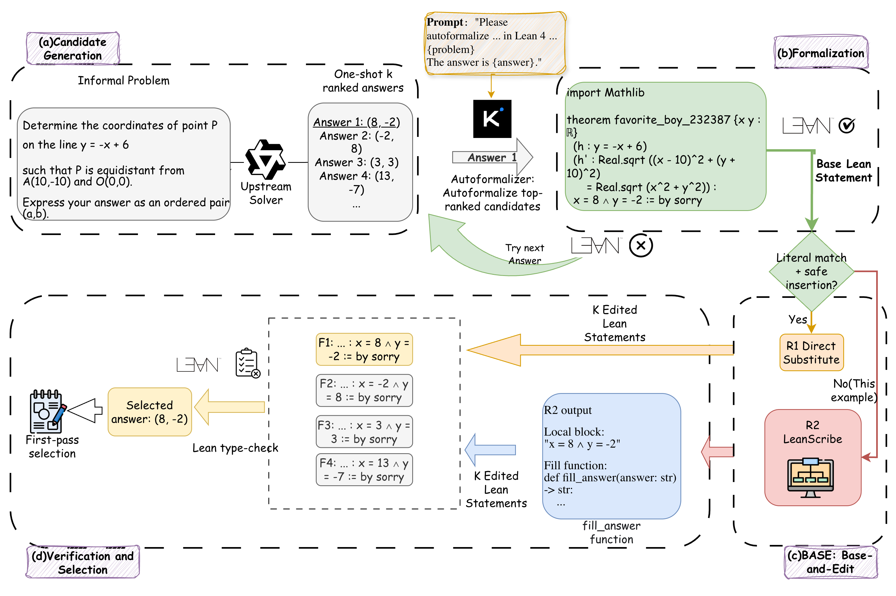

Uses Lean to verify formalized math-reasoning answers, editing one base formalization across candidates instead of formalizing each separately.
Abstract
With large language models (LLMs) increasingly applied to mathematical reasoning, formal proof assistants such as Lean can be leveraged to verify reasoning outputs with machine-checkable rigor, enabling use cases such as answer selection in test-time scaling with K sampled candidate answers. However, employing Lean requires that LLM outputs, originally in natural language, first be formalized. Existing Lean-based answer-selection work uses an autoformalization model to generate a formal statement in Lean for each candidate answer independently, incurring a significant computational cost. We propose BASE, a base-and-edit pipeline that formalizes a single base candidate per problem and derives the remaining K-1 statements by editing the answer expression in place. To facilitate this, we train a rewriter model LEANSCRIBE to localize the answer in the base formalization and generate a reusable edit function for the other K-1 candidates. BASE simultaneously improves selection accuracy and reduces formalization cost - a Pareto improvement that holds on all 12 (dataset, solver) configurations across four benchmarks and three solvers, cutting autoformalizer calls by about 5x at K=8, with the reduction expected to become larger as K grows. Code is available at https://github.com/ucr-rai/base-and-edit.
Problem
Lean-based answer selection for math reasoning formalizes each of K candidate answers independently, which is computationally expensive.
Approach
BASE formalizes a single base candidate per problem and derives the remaining K-1 statements by editing the answer expression in place. A trained rewriter, LEANSCRIBE, localizes the answer in the base formalization and generates a reusable edit function for the other candidates.

Figure 1: The Base pipeline. An upstream solver emits K ranked candidate answers; Base autoformalizes them in rank order until one type-checks, giving the base statement F_{b} (a failure triggers “try next answer”). A two-tier cascade— R1 direct substitution and R2 LeanScribe —edits F_{b} into the remaining K{-}1 statements, and the highest-ranked type-checking candidate is selected.
Results
BASE is a Pareto improvement across all 12 (dataset, solver) configurations over four benchmarks and three solvers, cutting autoformalizer calls about 5x at K=8, with larger reductions expected as K grows.